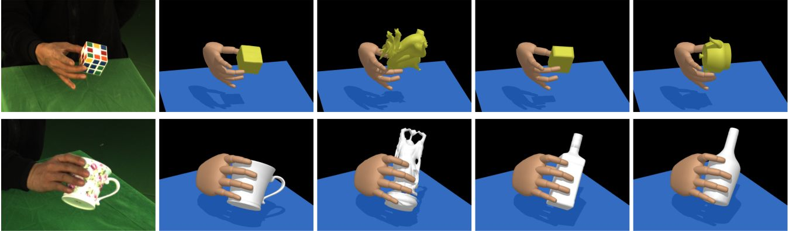
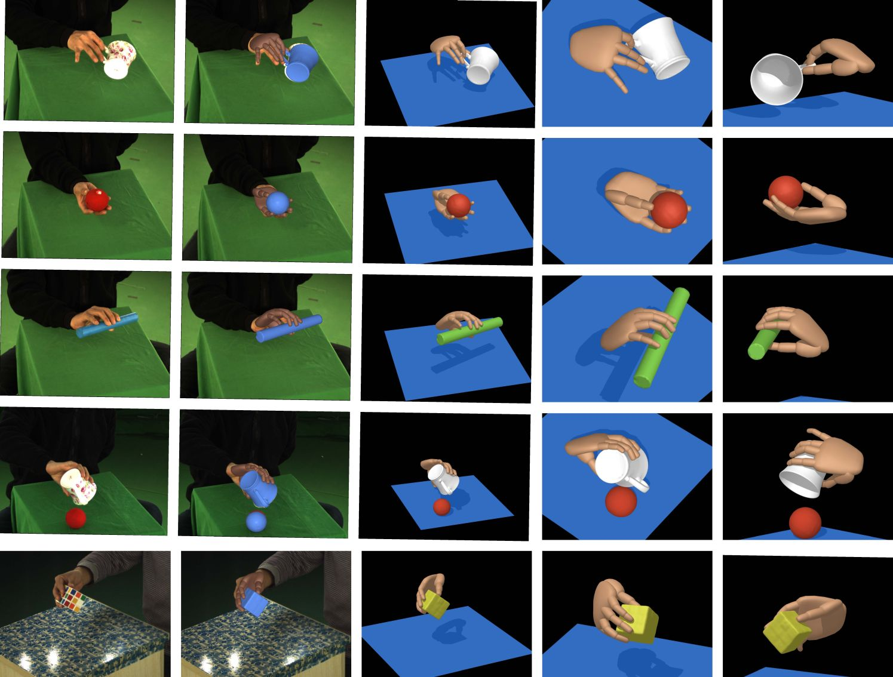
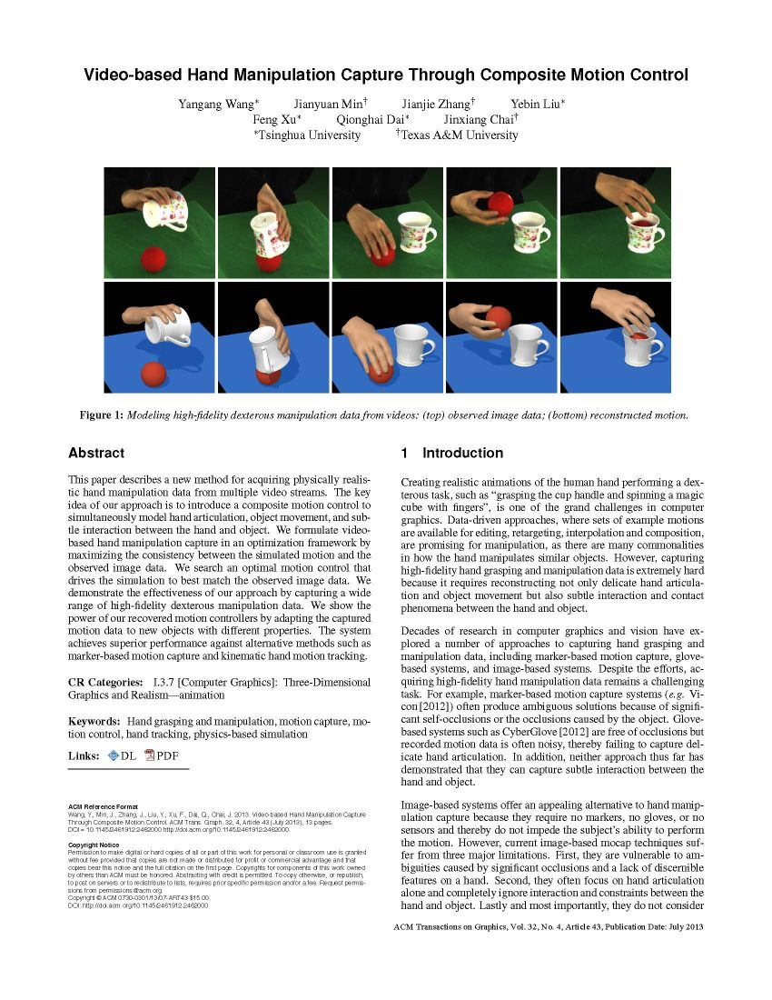

ACM Transactions on Graphics (SIGGRAPH 2013)
Video-based Hand Manipulation Capture Through Composite Motion Control

Retargeting Results.
From left to right, we show the original image data, the reconstructed manipulation data, and the retargeted motions for grasping and manipulating three different objects. See the original paper for more details.Abstract
This paper describes a new method for acquiring physically realistic hand manipulation data from multiple video streams. The key idea of our approach is to introduce a composite motion control to simultaneously model hand articulation, object movement, and subtle interaction between the hand and object. We formulate video-based hand manipulation capture in an optimization framework by maximizing the consistency between the simulated motion and the observed image data. We search an optimal motion control that drives the simulation to best match the observed image data. We demonstrate the effectiveness of our approach by capturing a wide range of high-fidelity dexterous manipulation data. We show the power of our recovered motion controllers by adapting the captured motion data to new objects with different properties. The system achieves superior performance against alternative methods such as marker-based motion capture and kinematic hand motion tracking.
Results

Materials
|

Related links
|
|
Reference
Yangang Wang, Jianyuan Min, Jianjie Zhang, Yebin Liu, Feng Xu, Qionghai Dai and Jinxiang Chai. "Video-based Hand Manipulation Capture Through Composite Motion Control". ACM Transactions on Graphics, 32(4), Article No.:43, 2013.
Acknowledgments: The authors would like to thank Wenping Zhao for his assistance of experiments in comparison against marker-based systems [Vicon Systems 2012; Zhao et al. 2012]. This work was supported in part by the National Science Foundation under Grants No. IIS-1065384 and IIS-1055046 and the NSFC under Grants No. 61035002, No. 60932007, No. 61073072, and No. 61021063.